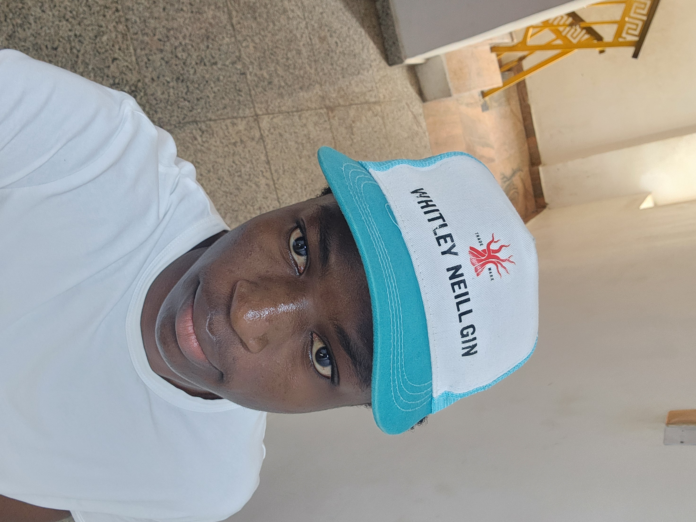

Tribute Page
A simple tribute page dedicated to someone I admire
View projectHello, I’m Victor, a passionate and driven tech enthusiast with a growing expertise in web development and modern digital solutions. My journey into tech is fueled by curiosity and the desire to create tools, websites, and applications that don’t just look good, but also solve real problems.
A simple tribute page dedicated to someone I admire
View projectA digital menu showcasing dishes and prices, built with tables
| Dish | Category | Price |
|---|---|---|
| Jollof Rice | Main | $10 |
| Chicken Suya | Starter | $6 |
| Chapman | Drink | $3 |
A clean resume layout with lists for skills and education
View project